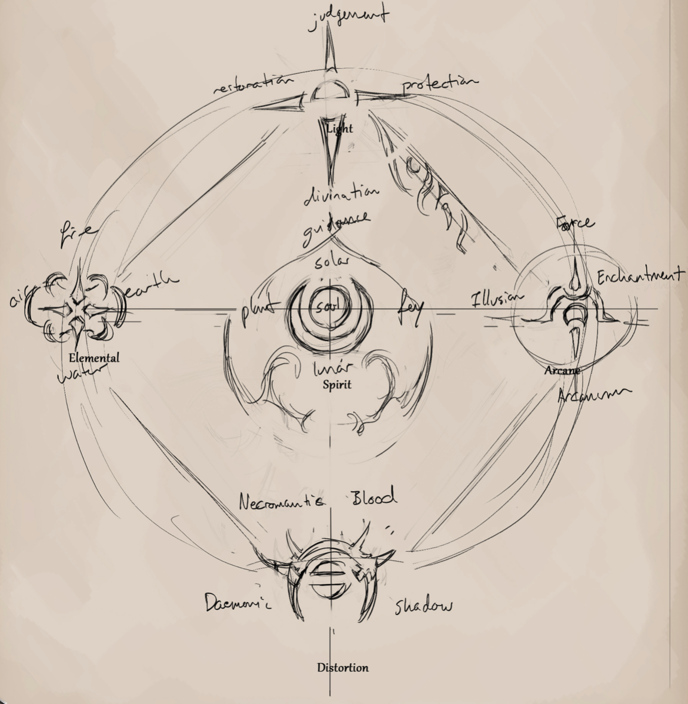

SPELLCASTING
Upon the rarest of nights there are some that swear of hearing incantations upon the faintest of winds and feel that the world has somehow changed. This belief of magical and supernatural supersitions is often laughed at, mocked and belittled, though could not be more true. Magic, though extremely rare, is very much a part of Avorkarth. Eldritch powers and ancient spiritual beings are present within the deep areas of the world, while servants to the many gods enact rituals to gain favor and blessings for their kin or personal power and wizards construct arcane studies that live long after they pass from the age.
Magic SPHERES 
SPELLCASTING
SPELLCASTING RARITY
Magic is truly rare within Avorkarth and most of its mortal races live their entire lives without its presence, especially the most common, humanity. The magical and supernatural are hidden away and even beneficial magic is looked upon with fear and distrust. Only answered prayers that come from some divine calling or a miracle from the light based gods of one's own race is viewed with grace and kindness.
Should a character have any spellcasting abilities, or has magical powers due to racial benefits, they would best be weary of using such things around the commonfolk, for most do not react well to it.
SPELL SPHERES
While casting spells is split into three distinct styles, the spheres of magic and their sub-sections, such as Fire, Necromantic or Daemonic to list a few, are the actual realms from which casters draw their powers. Elemental magic, as an example, is shared between Arcane and Spiritual casters, the former controlling it and the latter borrowing it, but both Arcane and Spirit casters are able to cast from its Sphere with varying effects.
SPELLCASTING TYPES
Magic at its core is split into three types, Devotion, Arcane and Spirit.
DIVINE/DEVOTION - PRAYERS AND LITANITES -
While still rare, devotion spells are the most often seen by common folk. Devotion spells are viewed as miracles or divine intervention and rightly so, as it is powers gifted and granted by divine or ancient beings. Divine spells are incantations, prayers or callings upon the worshipper's deity. Through the proper words, the belief of the caster, their fervor to the deity being called and the intervention of the deity itself, devotion spells are able to be cast. It is used by priests, worshippers and enforcers of certain deities or mighty beings.
Given Power : Devotion casters have access to all the spells given by their deity, as long as they have enough mana. These can be called upon and cast at any time unless specified. Each deity has a list of spells under their names in the Lore section.
Deity's Chosen : Devotion casters also gain bonuses given by their primary deity. These are listed before the spell list.
Place of Worship : If a devotion caster is within a sanctified area of their deity, they increase their caster might by 1 for spell costs and effects.
ARCANE/LEY-LINE - INCANTATIONS AND SPELLS -
The mystical arts of sorcery and wizardry are ones shrouded in mystery and superstition, yet is one of powers beyond imagining. Arcane spells are similarily cast as devotions through incantation, yet only function as an infusion of the caster's magical attunement alongside their knowledge of the spell itself. To gain such attunement to the arcane, practitioners will usually study ancient texts and tomes, have a well of power already within them, or find a darker path through bargains with ancient powers. Arcane magic derives from the laws of the world and is used by wizards, necromancers, sorcerers and other traditional casters.
Spell Memorization : Creatures who study the arcane can memorize a certain number of spells equal to their intelligence score.
Arcane Tome : Arcane casters must write down all of their magical incantations and spells that they've discovered. This tome allows arcane casters to spend a single action to find any non-memorized spell they have since learnt and cast it during their next action. Any newly encounted arcane spell can be studied and added to the tome. Studying a new spell takes exponentially more time the greater the spell's level.
Changing Memorized Spells : Arcane casters may rememorize different spells by spending about half a day (12 hours) reading their tome.
SPIRIT/NATURAL - UNBOUND POWER -
The elusive and nearly invisible power that creates life itsellf is known to very few and detectable by even fewer. This power that has been within all things since the creation of the Realm is most present and powerful within lands of unbound growth. It is the basis of all magic, appearing as an echo to the first ages' songs. Spirit magic appears within areas of the world where magic is respected and a more primal view is upheld. For this reason, it has been disappearing, its subtle flow ignored by the fast paced lives of most younger mortal races, and dissipating due to areas of populated civilization and reckless construction. It is mostly only used by fae-folk and eldritch creatures.
Inner Power : Creatures attuned to Spiritual magic may cast any spell from within their sphere of magic without restriction. Spiritual casting is similar to a whim or a feeling instead of a precise incantation, often appearing as a series of harmonzing notes or as a beautiful or terrifying song.
SPELLCASTING
SPELLCASTER LEVEL
Spellcasters are not all equal in power. Such rankings can be categorized, with certain thresholds of power granting the spellcaster additional magical might and inner power. These categorizations are the spellcaster levels. The greater a caster's level, the more power they wield, with lower level spells becoming easier to cast and gaining access to more powerful spells without the need of rituals. Spellcaster levels cannot be detected unless using a detect magic spell OR if the difference is 4 less.
RESERVE
All spellcasters, regardless of type, use an invisible force that benefits them. While the naming and source of each caster varies, for the rule's sake they all use “Reserve”.
SPELL LEVELS
A spells effect and power is linked to its level, with level 0 spells being minor effects and level 8 spells being able to level cities or change reality.
NON-CASTERS
For all rules and specific situations, non-casters are considered as having a caster level of -3 and a mana pool equivalent to 1. They cannot cast spells without the aid of a ritual.
Bonus Text!
CASTER LEVEL TO RESERVE AND SPELL LEVEL COST
| Caster Level | Reserve | 0 | 1 | 2 | 3 | 4 | 5 | 6 | 7 | 8 |
|---|---|---|---|---|---|---|---|---|---|---|
| Non-Caster | - | 12 | 24 | 48 | 96 | 192 | 384 | 768 | 1,536 | 3,072 |
| -2 | - | 9 | 18 | 36 | 72 | 144 | 288 | 576 | 1,152 | 2,304 |
| -1 | - | 7 | 14 | 28 | 56 | 112 | 224 | 448 | 896 | 1,792 |
| 0 | 5 | 5 | 10 | 20 | 40 | 80 | 160 | 320 | 640 | 1,280 |
| 1 | 7 | 4 | 8 | 16 | 32 | 64 | 128 | 256 | 512 | 1,024 |
| 2 | 9 | 3 | 6 | 12 | 24 | 48 | 96 | 192 | 384 | 768 |
| 3 | 11 | 2 | 4 | 8 | 16 | 32 | 64 | 128 | 256 | 512 |
| 4 | 13 | 1 | 3 | 6 | 12 | 24 | 48 | 96 | 192 | 384 |
| 5 | 15 | - | 2 | 4 | 8 | 16 | 32 | 64 | 128 | 256 |
| 6 | 17 | - | 1 | 3 | 6 | 12 | 24 | 48 | 96 | 192 |
| 7 | 19 | - | - | 2 | 4 | 8 | 16 | 32 | 64 | 128 |
| 8 | 21 | - | - | 1 | 3 | 6 | 12 | 24 | 48 | 96 |
| 9 | 23 | - | - | - | 2 | 4 | 8 | 16 | 32 | 64 |
| 10 | 25 | - | - | - | 1 | 3 | 6 | 12 | 24 | 48 |
| 11 | 27 | - | - | - | - | 2 | 4 | 8 | 16 | 32 |
| 12 | 29 | - | - | - | - | 1 | 3 | 6 | 12 | 24 |
| 13 | 31 | - | - | - | - | - | 2 | 4 | 8 | 16 |
| 14 | 33 | - | - | - | - | - | 1 | 3 | 6 | 12 |
| 15 | 35 | - | - | - | - | - | - | 2 | 4 | 8 |
SPELLCASTING
REGAINING RESERVES
Should a caster require to renew their reserve of power, they need to wait a certain amount of time or do certain actions based upon their casting type. Reservers do not replendish while focusing, channeling or casting a ritual.
DEVOTION CASTERS
Prayer : Devotion casters may sit in uniterrupted prayer to their deity, regaining 1/10th (min. 1) reserve per every 8 hours.
Icon of Worship : The caster further reduces the renewal interval by 4 hours.
Area of Sanctity : If the caster is in an area of might from their deity, halve the time required after the calculations of prayer and icon of worhip.
ARCANE CASTERS
Ley Attunement : Arcane casters regain 1/10th (min 1.) of their reserve per 6 hours naturally.
Syphon : Arcane casters may touch any magical object to absorbe its power. They regain reserve equal to the level of the spell cast upon the item. The item loses all magical qualities until the same amount of energy is refocused upon it. However, should the level of the spell on the item surpass the caster's spellcasting level, they additionally take 3 lethal damage per spell level higher.
SPIRIT CASTERS
Nature Bound : Spirit casters are bound to the health of the land. They regain 1/10th (min 1.) of their reserve per X amount of time, slowing significantly in areas without spiritual life.
| Area | Time Required |
|---|---|
| Spiritual (Primal Forest) | 1 hour |
| Wild (Forests) | 3 hours |
| Tamed (Farmlands) | 6 hours |
| Bleak (Village) | 12 hours |
| Drained (City) | 6 days |
| Barren (Capital) | -1 reserve per day. |
CASTING SPELLS
Whenever a spellcaster wishes to use magic in any form, they must weave their inner power and the mana flowing through the world into a tangible reserve. This is known as the art of spellcasting. While dependant per the power and ability of the caster, magic always requires three components to be calculated. The chosen spell, the caster's own might and the spent amount of time.
CASTING TIME
To all spellcasters, time is one the most essential components to casting spells, as the longer one has to concentrate on a spell, the less it costs upon their mind and body, essentially raising or lowering the caster's spellcaster level. Casting time is based upon how many actions, rounds or amount of time is required.
Rituals : A spellcaster can at best focus upon a spell at 3 spell caster levels higher than their own. Should a spell take longer than an hour, it is instead considered as a ritual.
SPELLCASTING TIME/SPELLCASTER LEVEL
| Action Time | Caster Level |
|---|---|
| Immediate/Swift Action | -2 |
| Standard Action | -1 |
| Full Round Action | - |
| 1 Minute (10 Rounds) | +1 |
| 10 Minutes (100 Rounds) | +2 |
| 1+ Hour (600 Rounds) | Ritual |
Lesser fae-folk, such as pixies and gnomes, often live or die based upon the health of the land. It is why many superstitious humans fear the woods and often keep the land at the edge of their farms barren.
SPELLCASTING
CASTING THE SPELL
Spellcasting is a very drastic thing, for it essentially overwrites the rules of the realm to produce a desired effect. Such changes cannot be done without the caster being able to handle the repercussions. As such, casters ought to be weary when casting a spell, for the after-effects upon themselves can range from splitting headaches to violently being torn apart in an instant death. Whenever a spell is finished casting and is released, the caster must roll a die with their caster level for the particular spell as the roll value, much like an attack, and compare to the spell's difficulty check.
SPELL DIFFICULTY CHECK - (VS. Updated Caster Level)
Spell level x 2 (Minimum 1)
Critical Success/Success : The spell goes through normally.
Partial Success : The spell casts, but the caster takes 1 non-lethal damage. Additionaly, they take non-lethal damage equal to the spell’s DC - their caster level.
Failure : The spell fails to cast. The caster takes 1 lethal damage. Additionally, the caster takes lethal damage equal to the spell’s DC - their caster level.
Critical Failure : The spell fails to cast. The caster takes 2 lethal damage. Additionally, the caster takes lethal damage equal to the spells DC x 2 - their caster level.
COUNTERSPELLING
Whenever a spell is begun, the surge of energy that occurs is naturally felt by any other caster nearby. This allows other casters to counter the spell being cast and they may attempt to dispel it by spending their reserve as if they cast the spell. The counterspeller may spend their lifeforce to attempt to cancel or dispel a spell. For every point of reserve higher than their total reserve pool, the caster takes 1 lethal damage.
Counterspelling may be done at two separate points in time. Before the spell is cast OR as the spell is cast.
Counterspelling beforehand : This counterspelling can only be cast as an amount of time less than the original caster's amount of time spent, with the equivalent action caster level penalty. The original caster need not roll to see if a penalty occurs, as the spell automatically fails. If a spell is cast as an immediate action, it can only be countered as it is cast. (See below)
Counterspelling as the spell is cast : The counterspelling caster must spend reserve equal to the cost of the spell being cast as if it were being cast from their caster level as an immediate time. (So at caster level -2). This counterspelling type can only be done if the original caster's spell is successful.
PERMANENT SPELLS
Most spells can be made permanent without the caster requiring to keep their concentration, however the cost to do so is tremendous. Any spell, enchantment or similar effect that is to be permanent (such as creating a magical weapon), increases the cost at -10 caster might. Most often it takes a ritual to do any such effect.
SPELLCASTING EXAMPLE
A foolish youthful adept believes his power to be so great that he attemps to overtake a nymph's lake.
- The adept's caster level is 2, and he therefore has 9 reserved power, quite impressively powerful for a human.
- He takes his time to cast the spell, an hour to be precise, believing himself to be hidden. This increases his caster level to 4 for this spell.
- He decides to risk it and cast the most powerful spell he can, a 2nd level spell, which as a 4th level caster will cost 6 of his reserves.
- A 2nd level spell has a spell difficulty of 4 (2x2), and as he releases his spell, he must roll against this check with his spellcaster level for this spell (4).
- The adept rolls his die and gets a 4, which is a partial success. He therefore gets a slight backlash, taking 3 non-lethal damage, almost knocking him unconscious (1 base + 2 for the difference between his caster level (2) and the spell difficulty (4)
- Being a partial success the spell goes through... except that the nymph had felt the surge and counters it.
- The female sei'yuulei has a natural base caster level of 4, and therefore 13 reserved power.
- She counters the spell as it is cast, making the caster deal with the non-lethal consequences. This forces her to counterspell as an immediate action, so a -2 penalty is applied to her caster level, bringing it down to a 2 for the calculations.
- To cast a 2nd level spell as a 2nd level caster takes 12 of her 13 reserves, and so she doesn't take any lethal damage as overcost.
- With both casters pretty much exhausted in terms of their casting reserves, the angered nymph slaughters the unarmored human with ease using her teeth and claws for trespassing upon her glade uninvited.
SPELLCASTING
RITUALS
Not all casters are powerful enought to cast spells of greater effect, and most aren't able to cast anything at all. However, with the aid of the right words, movements, prayers and ingredients, characters may empower their capabilities beyond what is normally available to them. Rituals may also be empowered by multiple people gaining ever greater might, which have in the past enabled cults to raze the cities of their enemies with magical plagues or to awaken and control eldritch creatures deep within the earth. Spells that are quickly cast, such as fireballs or rays, often have the ritual empower an object like an arrow, staff or wand.
Most rituals are arcane based deals done with creatures of darker desires such as daemons and malevolant beings. Devotion and spirit variants are rarer and require the user to be attuned to a powerful spirit or deity of the sphere of magic they are attempting to cast.
Ritual costs : Rituals are often an aid to powers, not necessarily an inherent power. A ritual begins when a spell cannot be cast in less than 1 hour, and its costs increase algorithmically the further the power of the spell is from the casting ritualist. For each reserve cost required to cast a spell, increase the total time by an additional i.
RITUAL COSTS (required reserve/2) (1+required reserve).
Additional Ritualists : For each additional person joining a ritual, the casting time is reduced by their total reserves. If a ritualist joins after the casting has already begun, calculate the total amount of time required, then reduce it by the amount of time already spent on the ritual.
Caster Benefits : Actual casters may reduce the total reserve required for a ritual by casting what they can at +2 of their caster might instead of their base caster might.
Power Control : The further a spell is from the caster's ability, the greater the danger. For each point of reserve the spell is greater than all of the ritualits' reserve total + 10, they roll a die. On a 2 or less, they take 1 point of lethal damage as feedback. Should all the ritualists are slain by the ritual, the spell is cancelled and a feedback occurs.
Stopping/Resuming : Rituals can only be paused at intervals of hours. Stopping early or late would result in the spell failing and a feedback would happen.
Feedback : A failed ritual will explode with feedback energy. The feedback of the ritual deals 2 lethal points of damage per level of the spell to all creatures within X tiles per level of the spell + 1 multiplied by the spell level twice over, with a minimum of 1 lethal damage at a distance of 1 tile. (So a level 3 spell feedback would deal 6 lethal damage (3X2) to all creatures within 36 tiles (4x3x3).)
RITUAL EXAMPLE
Three village women, suspected as witches, decide to take out their frustration by actually casting a spell. Though none have any magical capabilities, one of them has heard of a ritual passed down by her grandmother.
- Since none of the three women have any spellcasting abilities, they all have a caster level of Non-Caster and a power reserve of 1.
- The ritual is a weak one, casting a oth level spell to change the colour of the lying villager's favourite ring. Therefore the cost of a oth level spell for a non-caster is 12 reserve.
- With each of them having a total reserve of 1, they reduce the cost of the spell by 3 before the time calculations. This brings the cost down to 9.
- A ritual of 9 reserve is in total 45 hours (9/2)x(1+9), or more simply (1+2+3+4+5+6+7+8+9). This will make the ritual take a bit less than two days.
- Although none of them have any casting experience, they are lucky to be three, as their combined reserve + 10 is 13. This means they are powerful enough to control the 12 reserve spell and do not run the chance of being consumed by the spell.
- Once the ritual done, the spell is cast successfully.
Rituals are often scoffed at as being superstition and fakery. It is, however, used often as evidence to burn those under suspect.